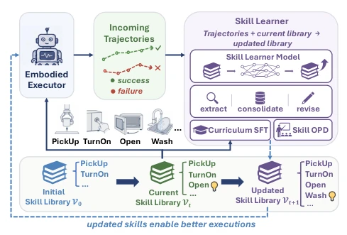
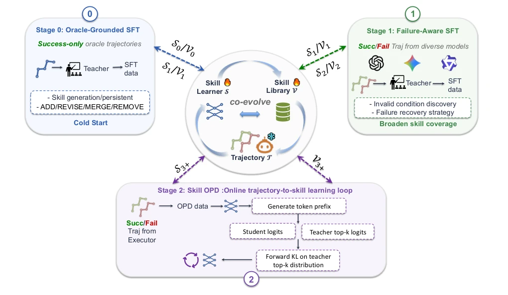
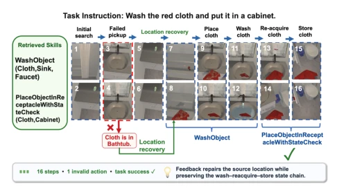
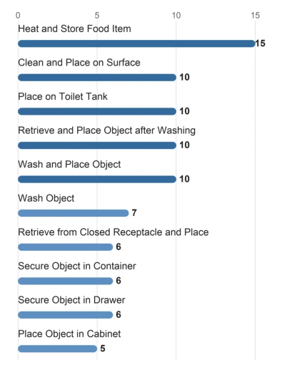
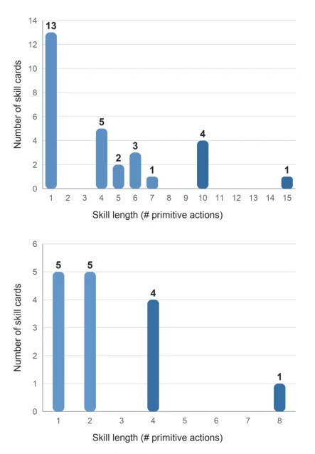
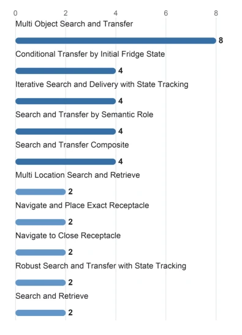
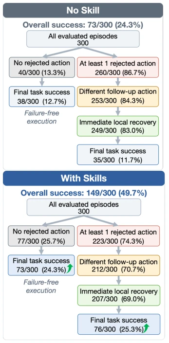
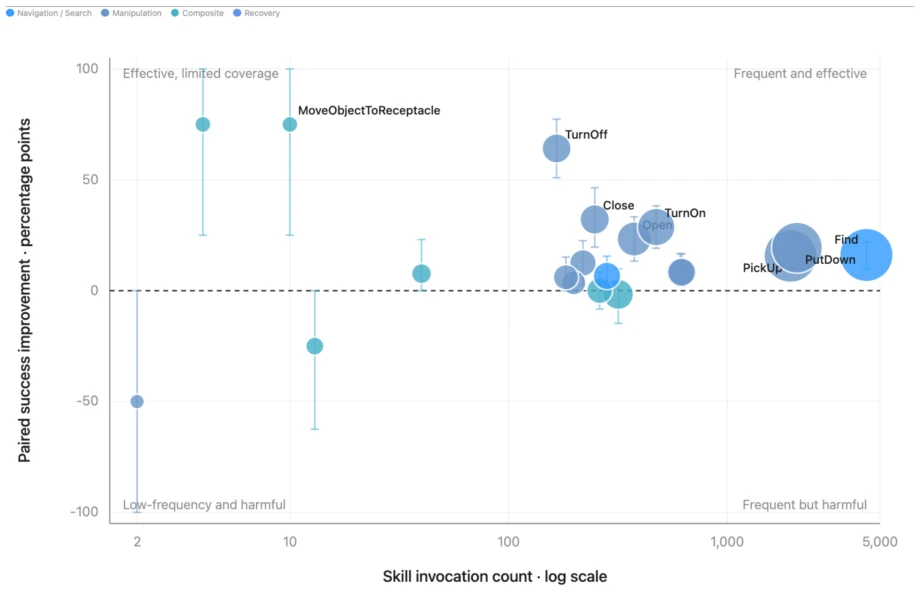
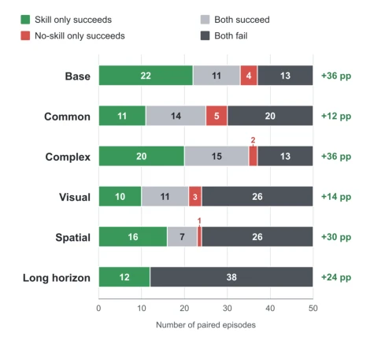
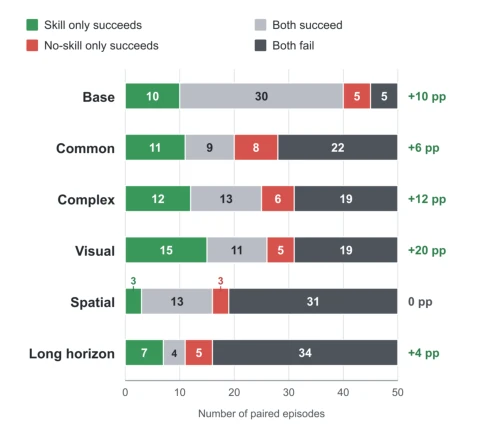

This paper adds an "external brain" to the "self-evolution" of embodied intelligence. The core idea is to freeze the "executor" and specifically train a "skill learner" to maintain the skill library, attempting to solve the rigidity problem of existing methods relying on fixed Prompts to update the skill library. Although claimed as "self-evolution", essentially it still relies on strong teacher model distillation (Skill OPD) and a large amount of artificially constructed Curriculum SFT data, which is still far from true "unsupervised self-iteration". However, the experimental results are indeed solid, significantly outperforming similar experience augmentation baselines on EB-ALFRED and EB-Habitat, especially the cross-model generalization capability (GPT, Gemini, Qwen all work) proving the universality of the external skill library. The downside is that the computational cost might be significant, after all, it requires maintaining a continuously updating library and training a specialized Learner, and the improvement on long-horizon tasks remains limited, indicating that the skill library's help for complex planning has a ceiling.
研究动机Motivation
具身任务规划中，MLLM 作为执行器虽然能理解指令，但面对复杂长程任务时容易失败，且难以持续改进。现有经验增强方法（如 Trace2Skill, AutoSkill）通常将经验外化为技能或记忆，但它们的维护逻辑主要依赖预设的 Prompt 和启发式规则（Ni et al. 2026; Yang et al. 2026）。这意味着技能库的内容虽在变，但更新策略本身无法从经验中学习，限制了跨任务环境的适应性。作者指出，真正的进化不仅是“知道什么”，更是“如何从经验中提炼知识”。因此，本文旨在解决技能更新策略不可学习的问题，提出让技能库和更新策略共同进化，而非依赖固定流程。
In embodied task planning, although MLLMs as executors can understand instructions, they tend to fail when facing complex long-horizon tasks and are difficult to continuously improve. Existing experience augmentation methods (such as Trace2Skill, AutoSkill) usually externalize experience into skills or memories, but their maintenance logic mainly relies on preset Prompts and heuristic rules (Ni et al. 2026; Yang et al. 2026). This means that although the content of the skill library changes, the update strategy itself cannot learn from experience, limiting adaptability across task environments. The authors point out that true evolution is not only about "knowing what" but also about "how to extract knowledge from experience". Therefore, this paper aims to solve the problem of unlearnable skill update strategies, proposing to let the skill library and update strategy co-evolve, rather than relying on fixed processes.
The overall framework is a closed loop of "Executor - Skill Library - Learner". Executor parameters are frozen, obtaining guidance only through the external skill library; the skill learner is responsible for generating structured edits (add, delete, modify, merge) based on trajectories. Training is divided into three stages: Stage 0 uses successful Oracle trajectories for cold start, learning basic skill generation and library maintenance (such as cross-batch merging); Stage 1 introduces success and failure trajectory comparisons from heterogeneous executors, training the learner to identify invalid conditions and generate recovery strategies (Failure-Aware); Stage 2 adopts Skill OPD (Online Skill Editing Distillation), allowing the learner to align with the strong teacher model on the distribution of edits generated by itself, reducing training-inference distribution differences. The skill library itself consists of parameterized skill cards, containing action mode sequences and usage specifications. This design decouples strategy update and knowledge accumulation, achieving progressive evolution through Curriculum SFT combined with On-policy Distillation.

Figure 1: Overview of our skill learning framework. A trainable skill learner extracts, consolidates, and revises reusable skills from successful and failed execution trajec- tories, progressively updating an external skill library. The updated skills guide the embodied executor toward improved task execution.

Figure 2: Training pipeline of Practice. Stages 0–1 use oracle-grounded and failure-aware SFT to initialize skill learning while Stage 2 applies Skill OPD to match a teacher’s token distributions on student-generated prefixes via forward KL.

Figure 3: A representative failure-recovery trajectory. The PickUp failure triggered “object not found” strategy redi- rects the search to an alternative location. The executor then resumes the task and completes it using WashObject and PlaceObjectReceptacle in 16 steps.
Tested on two benchmarks, EB-ALFRED and EB-Habitat, using Qwen3-VL-32B as the executor. Compared to the strongest experience augmentation baseline (such as MemCompiler (Ding et al. 2026)), Practice improves by 9.7 and 2.6 percentage points respectively. Ablation studies show that Stage 2's Skill OPD brings the maximum gain (average success rate improvement of 4.4%), and Failure-Aware learning shows significant improvement on long-horizon tasks (Long split) (from 8% to 14%). In cross-executor generalization tests, the improvement magnitude is largest for GPT-5.2 and Qwen (+30.3% and +25.4%), proving that the external skill library can significantly enhance the capabilities of different foundation models. However, there are still gaps on Habitat's Base and Long tasks, indicating that fixed action modes are insufficient for adapting to high-variance target positions.

Figure 4: The 10 skills with the longest default action se- quences in the EB-ALFRED skill library.

Figure 6: Distribution of default skill-expansion lengths in the learned skill libraries for (a) EB-ALFRED and (b) EB- Habitat. Skill length is measured by the number of primitive actions in the default expansion pattern.

Figure 5: The 10 skills with the longest default action se- quences in the EB-Habitat skill library.

Figure 7: Execution outcomes with and without learned skills over 300 EB-ALFRED episodes.

Figure 8: Skill-level benefit–risk analysis. Invocation frequency is plotted against paired success-rate improvement over the no-skill baseline; bubble size indicates task coverage, color denotes skill family, and error bars show 95% bootstrap confidence intervals.

Figure 9: Paired episode outcomes between the no-skill base- line and Practice across six EB-ALFRED splits. Each bar shows the four paired outcome categories, with the corre- sponding change in success rate (∆SR) reported on the right.

Figure 10: Paired episode outcomes between the no-skill baseline and Practice across six EB-Habitat splits. Each bar shows the four paired outcome categories, with the cor- responding change in success rate (∆SR) reported on the right.